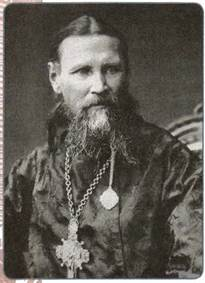
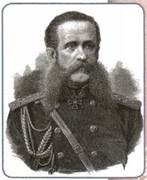
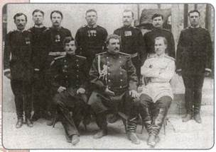
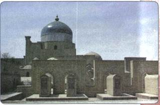

Материал для самостоятельной работы и проектной деятельности учащихся
Какие особенности имела политика Александра III по отношению к различным народам Российской империи?
1. Религиозная политика Александра III
При Александре III религиозную политику правительства определял обер-прокурор Синода К. П. Победоносцев. Он был сторонником идеи единения церкви и государства и отводил православию решающую роль в деле укрепления самодержавной власти.
Обеспокоенный ростом атеистических настроений в стране, обер-прокурор первым делом восстановил закрытые в 1860—1870-е гг. церковные приходы, а также открыл новые. За время царствования Александра III в Российской империи ежегодно возводилось до 250 церквей, на 22 % увеличилась численность священнослужителей.
Победоносцев стремился распространить православие среди нерусских народов империи. При нём оживилась деятельность православных миссий, умножилось число церковных журналов, выросли тиражи духовной литературы.
Обер-прокурор рекомендовал священникам проводить доверительные беседы с прихожанами, устраивать библиотеки при церквах, заниматься благотворительностью. Большое значение Победоносцев придавал также проведению торжеств по случаю различных церковных и государственных юбилеев.
В августе 1884 г. был издан новый устав духовных академий и семинарий, который ликвидировал введённую императором Александром II автономию этих учебных заведений, а также выборность ректоров и профессоров. Усиливался надзор государственных органов за духовными учебными заведениями. В 1890 г. Синод направил специальное предписание епископам, обязавшее их строго следить за тем, чтобы в духовные учебные заведения не проникали «неблагонадёжные» газеты и журналы.
В 1883 г. был издан закон, окончательно уравнявший старообрядцев в правах с остальными подданными Российской империи. Они получили паспорта, возможность владеть предприятиями, торговать, нанимать рабочих и служащих, иметь иконописные мастерские. Старообрядцам было предоставлено право проводить богослужение согласно своим обрядам. Однако им запрещалось сооружать колокольни, устраивать шествия с иконами, хоругвями и песнопениями за пределами церковного двора, а главное — распространять своё учение среди православного населения.
В то же время те вероисповедания, которые Победоносцев признавал опасными для православия, подвергались гонениям. Особую суровость обер-прокурор Синода проявлял к представителям сектантского движения. Особенно нетерпимым было отношение к тем, кто официально числился обращённым в православие, но на деле продолжал исповедовать прежнюю религию.
2. Иоанн Кронштадтский
Большим духовным авторитетом среди верующих Русской православной церкви обладал Иоанн Кронштадтский (1829—1908). На протяжении более полувека святой Иоанн был настоятелем Андреевского собора в Кронштадте, где ежедневно, без выходных, совершал Божественную литургию. День за днём он обращался к молящимся с яркими проповедями. Верующие передавали из уст в уста рассказы о чудотворных и пророческих способностях Иоанна Кронштадтского. Это влекло в церковь толпы людей, желавших его услышать. Обращались к нему и лютеране, и мусульмане, и иудеи. Несмотря на огромный поток посетителей, в просьбе о встрече и помощи он не отказывал никому. В Кронштадте отец Иоанн создал «дом трудолюбия», где ежедневно кормили до тысячи нищих и голодных. При доме священника была создана больница и школа для детей из бедных семей. Многочисленные пожертвования, которые он получал ежедневно, раздавались на благотворительные цели. Авторитет Иоанна Кронштадтского был настолько велик по всей стране, что в любой его поездке в глубинку его приветствовали и сопровождали тысячи верующих. Святитель Иоанн был близок к царскому двору. Он пользовался уважением и авторитетом у Александра III, а затем и у семьи последнего русского императора Николая II.
Привлекая дополнительные материалы, подготовьте сообщение или презентацию об Иоанне Кронштадтском. Рассмотрите его человеческие качества и религиозные взгляды, обстоятельства его жизни.
3. Национально-религиозная политика в Царстве Польском, Финляндии, прибалтийских губерниях, Украине, Белоруссии
После подавления Польского восстания 1863—1864 гг. был принят ряд мер, направленных на то, чтобы земли, населённые поляками, стали неотъемлемой частью Российской империи. На них распространилось общеимперское административное устройство. В 1883—1894 гг. администрацию Привислинского края возглавлял генерал-губернатор И. В. Гурко. В период его управления Министерство внутренних дел наделило русский язык статусом первого языка: он стал главным языком преподавания в школе и в делопроизводстве, внедрялся на железных дорогах, использовался на афишах, вывесках, этикетках и т. д.

Иоанн Кронштадтский

И. В. Гурко
Закон 1885 г. подтвердил, что назначение учителей в начальной и средней школе является прерогативой учебного ведомства, а преподавание всех предметов должно вестись на русском языке. Все важные посты в польских административных учреждениях занимали русские чиновники. Был принят ряд мер к экономической интеграции Польши в состав России (в 1885 г. упразднён Польский банк, который превратился в Варшавскую контору Петербургского банка, изъята из обращения польская монета).
Что касается управления Финляндией, обладавшей наибольшей автономией в составе империи, то и здесь был взят курс на постепенное свёртывание автономии, приведение юридического статуса края к общему для других губерний. Наиболее последовательно эта политика проводилась начиная с 1898 г. генерал-губернатором Н. И. Бобриковым. Были сокращены функции сейма, финляндская почта объединена с общеимперской, введён обязательный приём русской монеты. Затем последовали введение русского языка в делопроизводство ряда финских учреждений, ликвидация самостоятельного финского войска.
В прибалтийских губерниях правительство принимало меры по вытеснению немецкого влияния. В делопроизводство местных государственных учреждений вводился русский язык. Православная церковь при содействии Министерства внутренних дел и Синода начала практиковать обращение в православие латышей и эстонцев, исповедующих лютеранскую веру.
На украинских и белорусских землях правительство продолжало политику, направленную на укрепление позиций православия, слияние униатской и православной церквей.
Вспомните, что такое униатская церковь.
4. Национально-религиозная политика на Северном Кавказе, в Закавказье и Средней Азии
На Северном Кавказе и в Закавказье к 1880-м гг., так же как и в Польше, Прибалтике и т. д., распространяются правила общероссийского административно-политического управления. Здесь были созданы губернии по образцу Центральной России и окончательно ликвидированы остатки автономии Мегрелии, Сванетии и Абхазии. Социальная политика в этом регионе была направлена на привлечение местной знати на сторону России. Грузинское дворянство, армянские помещики, ханы и беки Азербайджана были приравнены в правах к русскому дворянству, за ними были закреплены принадлежавшие им ранее земли. В Армении также были подтверждены права и незыблемость земельной собственности Армянской григорианской церкви. Одновременно осуществлялась и переселенческая политика. Её целью было учредить военные поселения и колонии русских крестьян на Кавказе.

Группа участников экспедиции Н. М. Пржевальского. Сидит в центре — Н. М. Пржевальский
Россия проводила в этом регионе и продуманную национально-культурную политику. Хотя официальное делопроизводство велось на русском языке, народы Северного Кавказа и Закавказья сохраняли свой язык, культуру, верования и обычаи. Большую роль в развитии культурной жизни региона играли учебные заведения, научные общества, газеты и журналы на местных языках, театры и пр. Здесь стали открываться уездные училища для христианского и мусульманского населения. За счёт казны для уроженцев Кавказа («кавказских воспитанников») отводились места в центральных российских университетах.
К 1880-м гг. завершился процесс завоевания Россией территории Средней Азии. Здесь применялись разные формы управления, в зависимости от политических и экономических интересов государства. Кокандское ханство вошло в состав Российской империи под названием Ферганской области, Бухарский эмират и Хивинское ханство сохраняли свою внутреннюю автономию и свою систему управления. Положительными последствиями присоединения Средней Азии к России были прекращение междоусобных разорительных войн, ликвидация рабства и работорговли, упорядочение налоговой системы. Здесь было установлено единое с Россией законодательство, отражавшее изменения эпохи. Народы Средней Азии сохранили свою самобытную культуру, национальные и религиозные черты.
Кроме того, в Средней Азии более быстрыми темпами начала развиваться экономика. Получили распространение новые приёмы земледелия, сельскохозяйственные культуры, техника. Усилилось прогрессивное влияние культуры русского народа. В городах стали создаваться светские школы (в отличие от прежних духовных). Русские учёные и специалисты (П. П. Семёнов-Тян-Шанский, Н. М. Пржевальский, Б. В. Бартольд) развернули широкую деятельность по исследованию природы, истории и культуры Средней Азии.
5. Национально-религиозная политика на территории Среднего Поволжья и Приуралья, Сибири и Дальнего Востока
Что касается Среднего Поволжья и Приуралья, то здесь в 1880—1890-е гг. практически завершается процесс христианизации нерусских народов (мордвы, марийцев, удмуртов, чувашей). Сподвижник обер-прокурора Синода К. П. Победоносцева, известный миссионер Н. И. Ильминский выдвинул идею использовать для этих целей специально подготовленных священников, миссионеров и учителей из среды этих же народов. Для реализации этой идеи в Казани действовали центральная крещено-татарская учительская школа, инородческая учительская семинария, миссионерское общество «Братство святого Гурия». Сам Ильминский много занимался миссионерской деятельностью среди мусульманского населения, организовал сеть начальных школ и училищ по подготовке учителей для нерусских народов. Начальное обучение в них проводилось на родном языке, затем на церковнославянском и русском языках. Также под руководством Ильминского были созданы учебники и методические указания для учителей, переводы на языки народов Поволжья основных церковных канонических текстов. Итогом этой деятельности явилось не только упрочение основ православия в повседневной культуре и мировоззрении большинства народов Урало-Поволжья, но и распространение в их среде образования.
Преимущественно просветительский характер носила в этот период и христианизация народов Сибири и Дальнего Востока. Здесь повсеместно организовывались школы, в которых готовили помощников миссионеров, служителей церкви, переводчиков. Существовали и духовные семинарии, например, духовная семинария в г. Якутске была основана в начале 1880-х гг. Так же как и в Урало-Поволжье, осуществлялись переводы на языки народов Сибири и Дальнего Востока православных текстов.
Процесс христианизации происходил на фоне смешения культур русских переселенцев и местного населения. Многие местные жители, принявшие христианство, сами становились служилыми людьми, у них появлялись общие интересы с русскими, формировался близкий образ жизни. Одной из особенностей христианизации Сибири являлся тот факт, что здесь был широко распространён синкретизм в виде двоеверия (сохранение шаманских верований при принятии православия).
6. Положение нехристианских религий
Довольно широкой свободой пользовались в России конца XIX в. католичество, протестантизм, а также нехристианские религии — ислам, буддизм и др. Политика властей по отношению к этим конфессиям была вполне лояльной, если их деятельность не препятствовала исповеданию православия. Например, касательно к исламу она была сформулирована в постановлении Государственного совета 1887 г.: «Мусульмане свободны в отправлении своего культа при условии, что это не будет вредить православной церкви». Недаром этот период называют золотым веком российского ислама, представители которого образовали весьма уважаемое и влиятельное сообщество внутри исламского мира. Российское мусульманское духовенство было встроено в систему государственного управления.
Мусульманские деятели имели весьма неплохое жалованье, могли свободно выезжать на хадж, строить мечети, основывать медресе и издательства.
Духовное управление мусульман было обязано следить за моральным обликом духовенства, а также гарантировать его лояльность государю.
Некоторые ограничительные меры были приняты в отношении лиц иудейского вероисповедания. Их правовое положение регулировалось Временными правилами 1882 г. Согласно этому документу евреи были лишены права жить вне городов и местечек (т. е. сёлах) своей черты оседлости (при этом выезжать за пределы этой черты разрешалось на некоторое время, например для учёбы, по торговым и частным нуждам и пр.). Было ограничено участие евреев в избирательных кампаниях, а также право занимать должности в земском и городском управлении. Для еврейской молодёжи был ограничен допуск в гимназии и университеты (допустимая норма составляла 3% в столицах и 5% в городах за чертой оседлости).

Мечеть и медресе в Хиве
ПОДВЕДЁМ ИТОГИ
Национально-конфессиональная политика 1880—1890-х гг. была направлена на достижение политического и культурного единообразия польских, прибалтийских губерний, Закавказья и Финляндии. Правительство оказывало всестороннюю поддержку Русской православной церкви в укреплении её позиций и распространении вероучения. В частности, в этот период завершается процесс христианизации нерусских народов Поволжья, Приуралья, Сибири и Дальнего Востока. Это не только облегчило адаптацию населения этих регионов в российском сообществе, но и способствовало взаимодействию различных культур. Что касается остальных конфессий, то отношение к ним было вполне лояльным при условии, что их деятельность не мешала исповеданию православия.
Вопросы и задания для работы с текстом параграфа
1. Что являлось важнейшим приоритетом в национальной политике властей в 1880—1890-е гг.? 2. Расскажите о политике властей в Польше, Финляндии, Прибалтике в 1880—1890-е гг. 3. Дайте оценку деятельности К. П. Победоносцева на посту обер-прокурора Синода. 4. Почему власти старались привлечь на свою сторону представителей знати на Кавказе, в Закавказье и Средней Азии? 5. Каковы были особенности политики христианизации народов Поволжья, Приуралья, Сибири и Дальнего Востока в конце XIX в.? В чём её отличие от политики предшествующих периодов?
Думаем, сравниваем, размышляем
1. Как связан общий курс внутренней политики Александра III с его политикой по отношению к так называемым национальным окраинам империи? Аргументируйте свой ответ. 2. Почему Синод в 1880-е гг. уделял большое внимание духовным учебным заведениям? 3. Подготовьте сообщение о деятельности одного из исследователей Средней Азии, упомянутых в параграфе. 4. Сделайте презентацию, рассказав об одном из культовых сооружений буддистов, которое существовало в конце XIX в. в России. 5. Соберите в Интернете материалы о жизни мусульман России в конце XIX в. Напишите в тетради эссе на тему «Мусульмане и православные — две веры, один народ».